Trasparenza retributiva: cosa puoi davvero chiedere sullo stipendio dei colleghi
Dal 7 giugno 2026 gli Stati membri devono recepire la Direttiva UE 2023/970 sulla trasparenza retributiva. La novità: il lavoratore potrà chiedere i livelli salariali medi per cate…
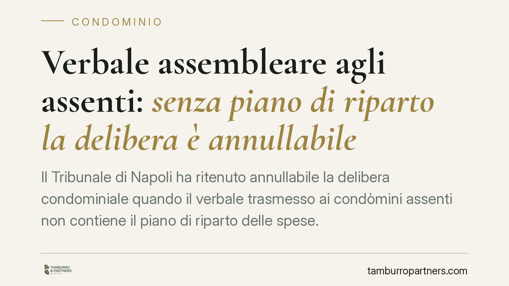
Verbale assembleare agli assenti: senza piano di riparto la delibera è annullabile
Il Tribunale di Napoli ha ritenuto annullabile la delibera condominiale quando il verbale trasmesso ai condòmini assenti non contiene il piano di riparto delle spese. L'omissione è…
Vietare gli affitti brevi in condominio: cosa dice la legge
Gli affitti brevi convivono spesso male con gli equilibri condominiali. Ma il singolo proprietario può essere obbligato a rinunciarvi? La risposta dipende dal tipo di regolamento e…
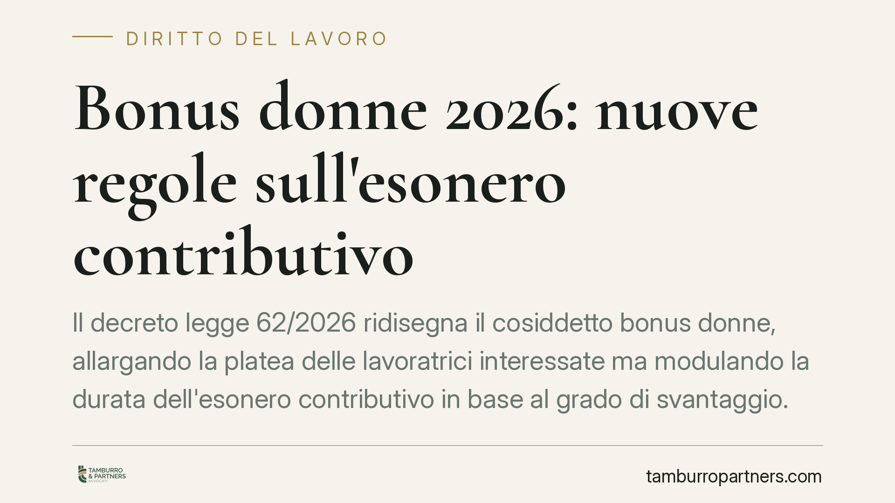
Bonus donne 2026: nuove regole sull'esonero contributivo
Il decreto legge 62/2026 ridisegna il cosiddetto bonus donne, allargando la platea delle lavoratrici interessate ma modulando la durata dell'esonero contributivo in base al grado d…
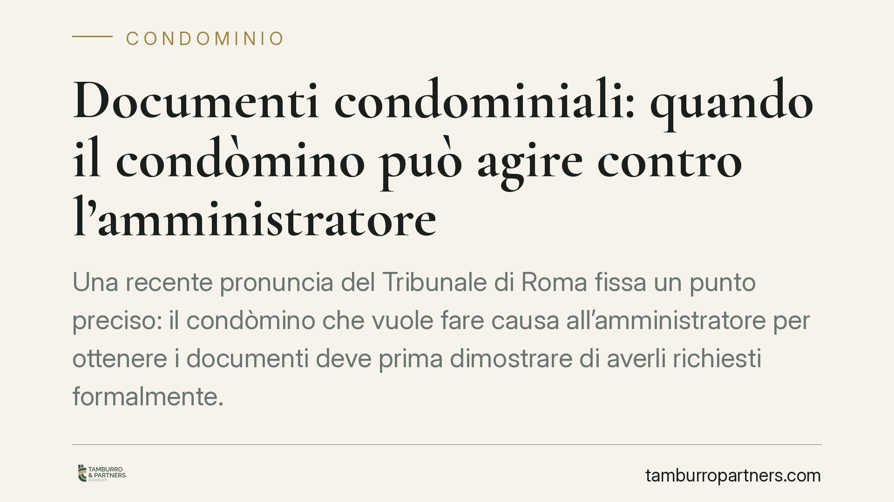
Documenti condominiali: quando il condòmino può agire contro l'amministratore
Una recente pronuncia del Tribunale di Roma fissa un punto preciso: il condòmino che vuole fare causa all'amministratore per ottenere i documenti deve prima dimostrare di averli ri…
Rumori e odori molesti in condominio: quando spetta il risarcimento
Rumori dal piano di sopra, odori di cucina che invadono l'appartamento, vibrazioni di impianti: sono le cosiddette immissioni. Quando superano la normale tollerabilità il danneggia…
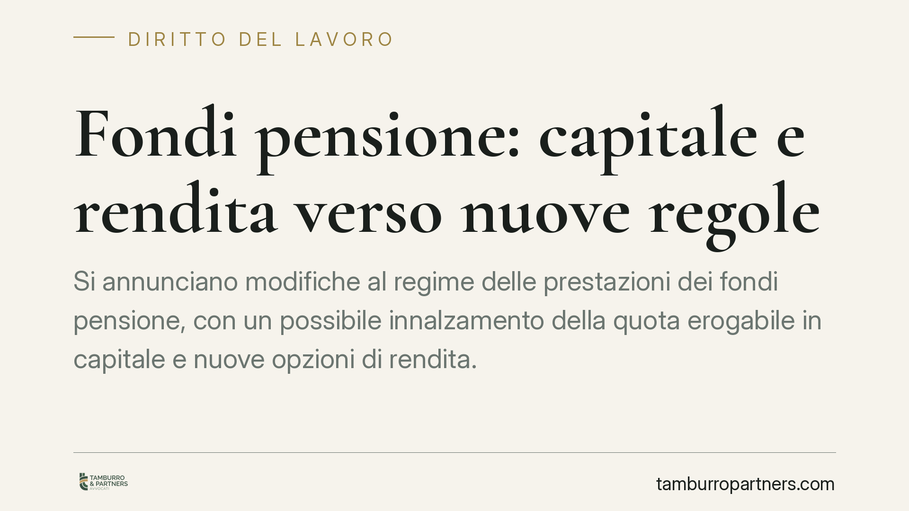
Fondi pensione: le possibili novità su capitale e rendita vitalizia
La manovra di bilancio in corso di approvazione punta a ridisegnare l'erogazione delle prestazioni dei fondi pensione: più capitale liquidabile subito e nuove formule di rendita. L…
Multe in condominio: quando bastano la maggioranza e quando serve l'unanimità
Le multe condominiali per violazione del regolamento sono ammesse, ma la loro introduzione segue regole diverse a seconda del contenuto. Entro i limiti dell'art. 70 disp. att. c.c.…
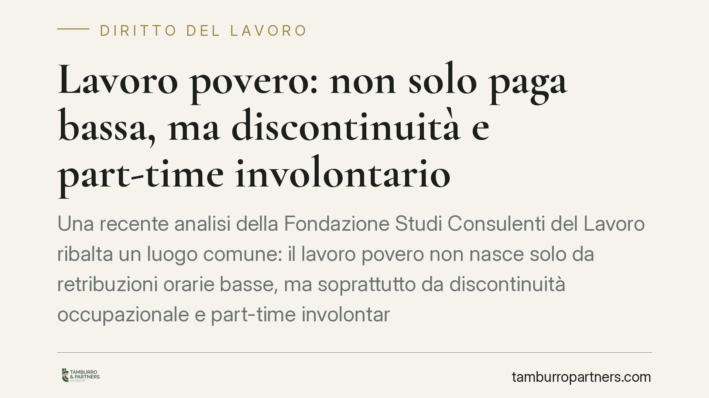
Lavoro povero: non solo paga bassa, ma discontinuità e part-time involontario
Una recente analisi della Fondazione Studi Consulenti del Lavoro ribalta un luogo comune: il lavoro povero non nasce solo da retribuzioni orarie basse, ma soprattutto da discontinu…
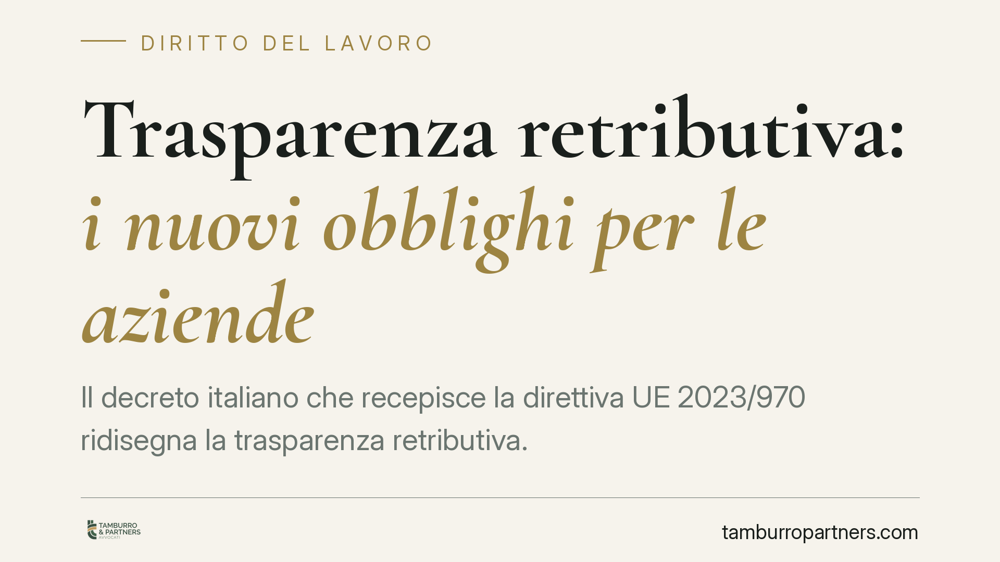
Trasparenza retributiva: i nuovi obblighi per le aziende
Il decreto italiano che recepisce la direttiva UE 2023/970 ridisegna la trasparenza retributiva. L'obbligo di reporting sui salari scatta solo per le aziende con almeno 100 dipende…
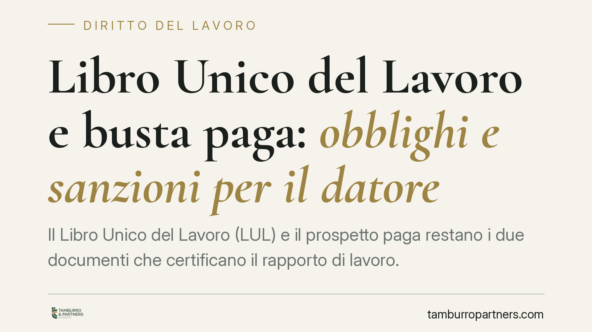
Libro Unico del Lavoro e busta paga: obblighi e sanzioni per il datore
Il Libro Unico del Lavoro (LUL) e il prospetto paga restano i due documenti che certificano il rapporto di lavoro. Tenuta, contenuti e conservazione sono regolati per legge, e gli …
Vendite solidali e influencer: i nuovi obblighi di trasparenza
Una nuova disciplina interviene sulle vendite presentate come solidali e sulle campagne promosse dagli influencer. L'obiettivo è rendere trasparente quanta parte del prezzo arriva …
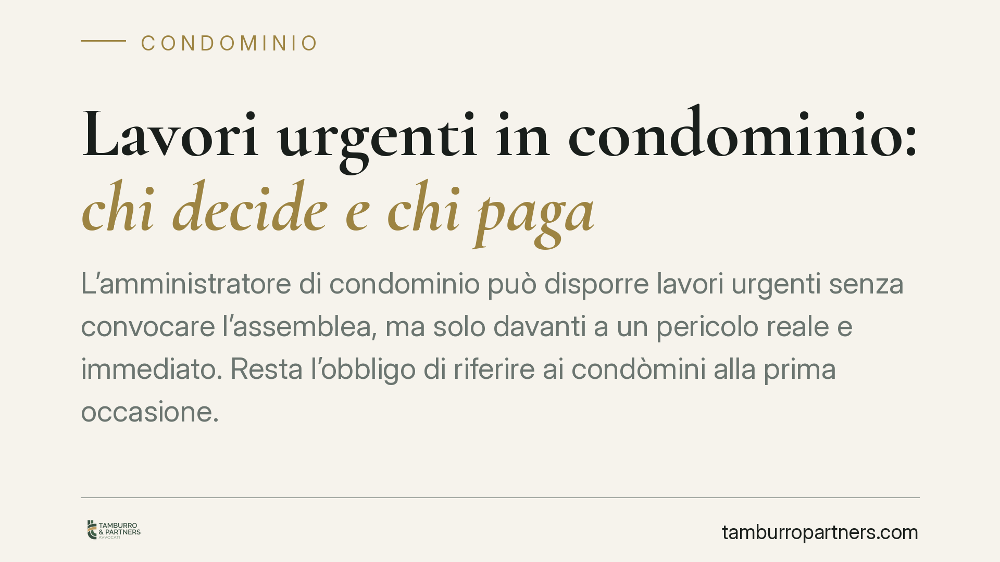
Lavori urgenti in condominio: chi decide e chi paga
L'amministratore di condominio può disporre lavori urgenti senza convocare l'assemblea, ma solo davanti a un pericolo reale e immediato. Resta l'obbligo di riferire ai condòmini al…
Revoca dell'amministratore di condominio: solo risarcimento, niente reintegra
L'amministratore di condominio revocato dall'assemblea non può ottenere il reintegro nell'incarico: gli spetta, al più, un risarcimento economico. È l'orientamento giurisprudenzial…
Minaccia di licenziamento per ridurre lo stipendio: quando è estorsione
Costringere un dipendente ad accettare una retribuzione più bassa sotto la minaccia di licenziamento può integrare il reato di estorsione. Lo ribadisce una recente pronuncia della …
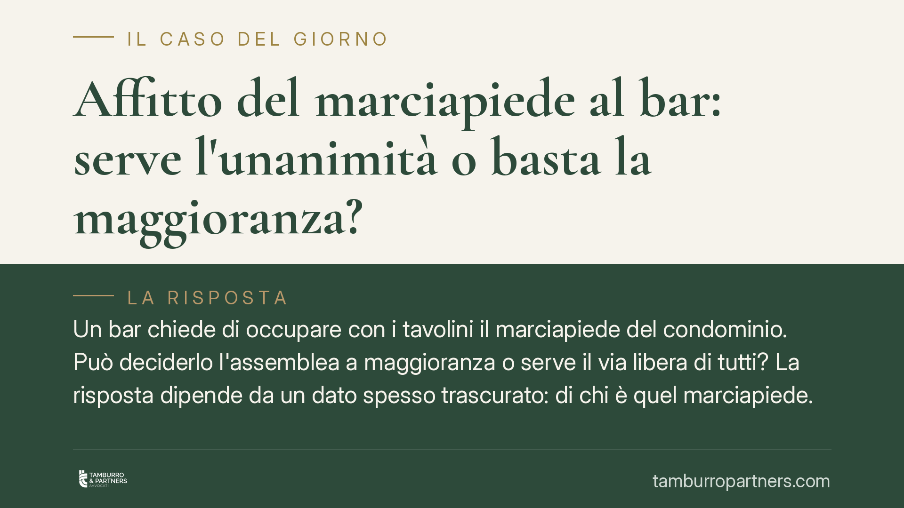
Affitto del marciapiede al bar: serve l'unanimità o basta la maggioranza?
Un bar chiede di occupare con i tavolini il marciapiede del condominio. Può deciderlo l'assemblea a maggioranza o serve il via libera di tutti? La risposta dipende da un dato spess…
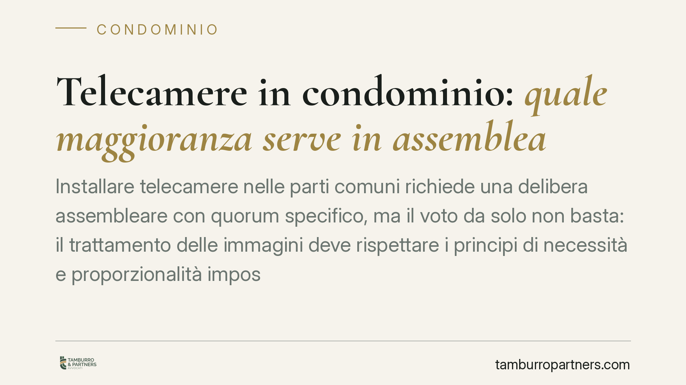
Telecamere in condominio: quale maggioranza serve in assemblea
Installare telecamere nelle parti comuni richiede una delibera assembleare con quorum specifico, ma il voto da solo non basta: il trattamento delle immagini deve rispettare i princ…
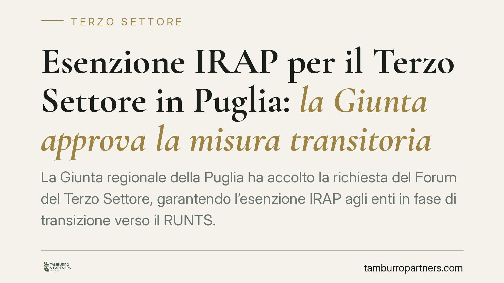
Esenzione IRAP per il Terzo Settore in Puglia: la Giunta approva la misura transitoria
La Giunta regionale della Puglia ha accolto la richiesta del Forum del Terzo Settore, garantendo l'esenzione IRAP agli enti in fase di transizione verso il RUNTS. La misura evita i…
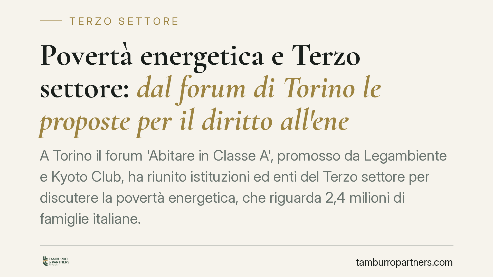
Povertà energetica e Terzo settore: dal forum di Torino le proposte per il diritto all'energia
A Torino il forum 'Abitare in Classe A', promosso da Legambiente e Kyoto Club, ha riunito istituzioni ed enti del Terzo settore per discutere la povertà energetica, che riguarda 2,…
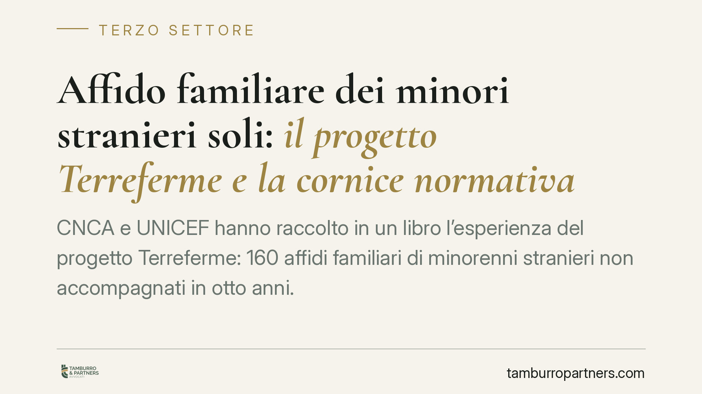
Affido familiare dei minori stranieri soli: il progetto Terreferme e la cornice normativa
CNCA e UNICEF hanno raccolto in un libro l'esperienza del progetto Terreferme: 160 affidi familiari di minorenni stranieri non accompagnati in otto anni. L'occasione per chiarire l…
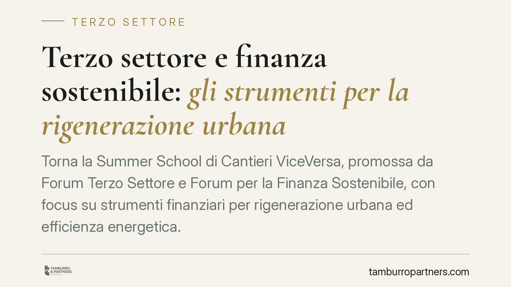
Terzo settore e finanza sostenibile: gli strumenti per la rigenerazione urbana
Torna la Summer School di Cantieri ViceVersa, promossa da Forum Terzo Settore e Forum per la Finanza Sostenibile, con focus su strumenti finanziari per rigenerazione urbana ed effi…
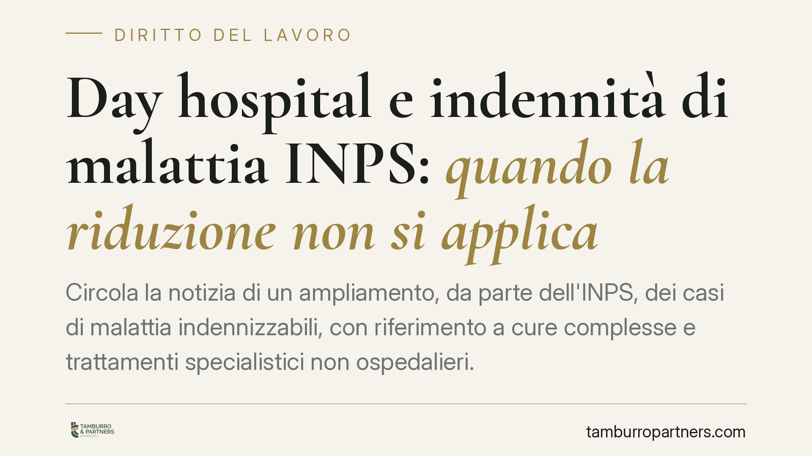
Day hospital e indennità di malattia INPS: quando la riduzione non si applica
Circola la notizia di un ampliamento, da parte dell'INPS, dei casi di malattia indennizzabili, con riferimento a cure complesse e trattamenti specialistici non ospedalieri. L'atto …

Estinzione anticipata del credito al consumo: il rimborso dei costi dopo la Lexitor
La Cassazione torna sul rimborso dei costi nel credito al consumo estinto in anticipo. Recependo i principi della sentenza europea Lexitor, ribadisce che al consumatore spetta la r…

Polizza assicurativa dell'amministratore di condominio: è obbligatoria?
La polizza professionale dell'amministratore di condominio non è imposta dalla legge in via generale, ma diventa obbligatoria quando l'assemblea la richiede o quando si deliberano …

Cambio dell'amministratore di condominio: revoca e passaggio di consegne
Sostituire l'amministratore di condominio è un diritto dell'assemblea, ma va esercitato con regole precise. Dalla delibera di revoca alla consegna della documentazione, ogni passag…

Una società può fare l'amministratore di condominio?
La gestione di un condominio può essere affidata anche a una società, di persone o di capitali, e non solo a un professionista persona fisica. La legge, però, impone che i requisit…

Formazione obbligatoria dell'amministratore di condominio: quando serve
La formazione dell'amministratore di condominio non è un dettaglio burocratico, ma un requisito di legittimità della nomina. Chi gestisce un condominio per professione deve dimostr…

Amministratore che sottrae i fondi del condominio: tutele e rimedi
Quando l'amministratore sparisce con la cassa, il condominio resta esposto su due fronti: il danno economico e le spese correnti da coprire. La sottrazione dei fondi integra un rea…

Superbonus 110% in condominio: la delibera basta a concludere il contratto?
L'assemblea approva l'offerta di un'impresa per i lavori col Superbonus 110%: il contratto è già concluso? La risposta è no. La sola deliberazione interna non vincola l'impresa: oc…

Convocazione dell'assemblea condominiale: WhatsApp ed email non bastano
Convocare l'assemblea con un messaggio WhatsApp o una semplice email sembra pratico, ma espone le delibere al rischio di annullamento. La legge impone forme precise di comunicazion…